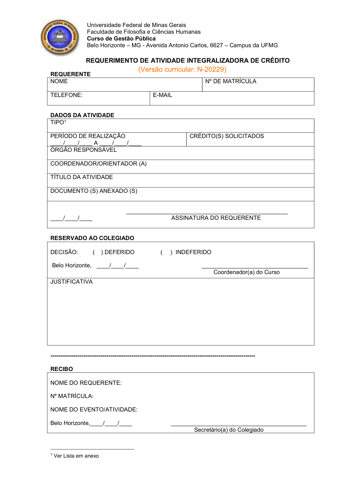

Extensão & Atividades Complementares (AAC)
Regulamento oficial, curricularização da extensão (300h), modalidades de AAC e validação no Colegiado
Normas Oficiais • Capítulos IV e V 300h Extensão Obrigatória Até 300h AAC (Art. 15)
EXTENSÃO UNIVERSITÁRIA E HORAS COMPLEMENTARES
A formação em Gestão Pública na UFMG integra extensão comunitária obrigatória e enriquecimento acadêmico complementar. É fundamental compreender que Formação em Extensão e Atividades Acadêmicas Complementares (AAC) são exigências distintas previstas no Regulamento e no Projeto Pedagógico do Curso.
Quadro Geral de Cargas Horárias
300 HORAS
Formação em Extensão Obrigatória
10% da carga total do curso (Res. CEPE nº 10/2019)
ATÉ 300 HORAS
Atividades Complementares (AAC)
Integralizáveis como optativas (Art. 15 do Regulamento)
1 CRÉDITO = 15H
Parâmetro Oficial da UFMG
Todas as cargas são convertidas nesta proporção
Calculadora & Simulador Interativo de Horas
Use os botões - e + (em blocos de 15h = 1 crédito) para simular suas horas já realizadas ou planejadas. A calculadora respeita automaticamente o teto máximo regimental de cada categoria e salva seu rascunho neste navegador:
SIMULADOR DE INTEGRALIZAÇÃO: EXTENSÃO (300H) + AAC (ATÉ 300H)
1. Formação em Extensão (Meta: 300h)
0h / 300h (0 cr)Exigência obrigatória para colação de grau (20 créditos = 300h):
2. Horas Complementares AAC (Teto: 300h)
0h / 300h (0 cr)Abatem créditos optativos respeitando os limites do Art. 15:
📜 Todas as 9 modalidades de AAC e os prazos regimentais constam no Capítulo IV do Regulamento (Art. 13 a 17). 📥 Baixar Regulamento do Curso (PDF • 2 MB)
Regulamento Detalhado por Categoria
A Resolução CEPE nº 10/2019 estabelece que 10% da carga horária de todos os cursos de graduação da UFMG deve ser composta por extensão universitária com a sociedade.
- Disciplinas Optativas de Laboratório de Extensão:
DCP 195 - Laboratório de Gestão e Políticas Públicas A:90 horas (6 créditos).DCP 196 - Laboratório de Gestão e Políticas Públicas B:90 horas (6 créditos).
- Empresa Júnior de Gestão Pública (Equalitas UFMG Consultoria Jr.):
- Atividades e projetos de consultoria desenvolvidos na Equalitas Jr. são convalidáveis como Atividades Interinstitucionais de Extensão (até 6 créditos / 90 horas).
- Projetos e Programas de Extensão na UFMG (PROEX / SIEX):
- Participação como bolsista ou voluntário em projetos registrados no Sistema de Informação da Extensão (até 6 créditos / 90 horas).
- Participação em Organização de Eventos (Eventos II):
- Atuação em comissão organizadora, comitê técnico-científico ou como debatedor/moderador de evento da área (até 2 créditos, extensível a 4 créditos somado a ouvinte).
- Atividades Interinstitucionais de Ensino:
- Cursos e oficinas promovidos por outras instituições de ensino públicas na área de Gestão Pública (até 8 créditos / 120 horas).
Conforme o Art. 14, o Colegiado designa um docente específico do Departamento de Ciência Política com mandato de 2 anos para analisar e despachar requerimentos de extensão ad referendum.
As AACs são atividades facultativas de enriquecimento curricular desenvolvidas durante o vínculo com a graduação, podendo integralizar até 300 horas do grupo de optativas (Art. 15):
| Modalidade Oficial (Art. 15) | Atividades Válidas | Teto Máximo | Comprovação Exigida no Colegiado |
|---|---|---|---|
| I — Pesquisa Interinstitucional | Projetos de pesquisa realizados em outras instituições voltadas para Gestão Pública. | 75h (5 cr) | Relatório final assinado pelo discente e responsável externo, com avaliação de desempenho. |
| II — Monitoria Acadêmica | Monitoria (bolsista ou voluntária) em disciplinas afins à Gestão Pública. | 45h (3 cr) | Relatório final assinado junto ao docente responsável pela matéria. |
| III — Eventos I (Ouvinte) | Congressos, seminários e palestras na área de públicas (1 crédito a cada 15h). | 60h (4 cr) | Prazo: 120 dias Certificado com carga horária protocolado em até 120 dias corridos do evento! |
| IV — Grupos de Estudo | Participação regular em grupos de estudo cadastrados na UFMG. | 30h (2 cr) | Relatório final assinado com avaliação do docente coordenador. |
| V — Pesquisa na UFMG | Iniciação Científica (PIBIC, PIBITI ou voluntária) desenvolvida na UFMG. | 90h (6 cr) | Relatório final atestado pelo orientador da pesquisa no DCP/UFMG. |
| VI — Pesquisa Bibliográfica | Aprofundamento teórico orientado por docente em tema da área, distinto do TCC. | 30h (2 cr) | Texto científico elaborado e parecer avaliativo do docente orientador. |
| VII — Trabalho em Anais | Apresentação de pôster, trabalho oral ou artigo publicado em anais de evento científico. | 30h (2 cr) | Prazo: 120 dias Certificado de apresentação entregue em até 120 dias corridos do evento. |
| VIII — Artigo em Periódico | Artigo publicado em revista científica reconhecida (Qualis/Capes). | 60h (4 cr) | Cópia do artigo publicado ou carta oficial de aceite definitivo do periódico. |
| IX — Vivência Profissional | Gestão em órgãos públicos, ONGs ou estágio não-obrigatório na área de públicas. | 60h (4 cr) | Documento de autorização e relatório final assinado com avaliação das atribuições. |
O Art. 15, § 4º, incisos III e VII estabelece que certificados de participação e de apresentação em congressos, conferências e eventos devem ser protocolados junto ao Colegiado no prazo máximo de 120 dias corridos após a realização do evento! Não guarde certificados de eventos para o fim do curso.
Como Preencher o Requerimento de AAC (Versão N-20229)
Preencha um requerimento para cada atividade extracurricular que desejar integralizar na sua carga horária de até 300h (Art. 15). Confira os campos indispensáveis no formulário padrão:

1. Identificação do(a) Estudante
Preencha seu nome completo, Nº de Matrícula, telefone de contato e e-mail institucional @ufmg.br. Certifique-se de que sua versão curricular é a N-20229.
2. Classificação da Atividade & Créditos
Indique o Tipo (Modalidades I a IX), período de realização (início e término), órgão ou entidade promotora e a quantidade exata de créditos solicitados (1 crédito = 15h).
3. Anexos Comprobatórios & Assinatura
Relacione no campo de documentos os certificados com código/link de verificação de autenticidade eletrônica. Assine e date a solicitação antes da entrega.
Onde Entregar e Acompanhamento
Protocolar no guichê do CEAG (2º andar da FAFICH) ou conforme instrução semestral do Colegiado. Após análise do docente do DCP, os créditos constarão no seu histórico escolar no SIGA.
Programa de Imersão no Campo de Públicas
Criado no segundo semestre de 2017 pelo Colegiado de Coordenação Didática, o Programa de Imersão no Campo de Públicas congrega ações de ensino, pesquisa e extensão universitária. Seu objetivo é integrar a formação teórica de sala de aula à prática profissional real, prestando consultoria e assessoramento direto a órgãos públicos municipais, estaduais e organizações da sociedade civil.
O programa estrutura-se em 3 eixos fundamentais:
Laboratórios A e B
Operacionalizado nas disciplinas de Laboratório de Gestão e Políticas Públicas A e B (7º e 8º períodos). Equipes de alunos desenvolvem produtos sob demanda de órgãos públicos parceiros:
- Diagnósticos de gestão ou situacionais;
- Projetos de intervenção governamental;
- Análises de políticas públicas e matrizes orçamentárias;
- Otimização de processos e gestão de pessoas.
Gestão Além do Horizonte
Projeto de assessoria técnica a gestores de prefeituras municipais de Minas Gerais, conduzido por discentes sob supervisão docente do DCP:
- Elaboração de planos municipais em áreas temáticas prioritárias;
- Captação de recursos federais e estaduais para municípios;
- Capacitação de equipes administrativas locais.
Práticas Avançadas
Projetos de extensão contínuos com duração superior a um semestre, registrados oficialmente no Sistema de Informação da Extensão (SIEX):
- Registro SIEX: Projetos nº 109111 e nº 109109;
- Instagram Oficial: @programadeimersao ↗;
- Participação remunerada com bolsas de extensão ou voluntária válida para a carga horária de 300h.
Núcleos de Pesquisa do DCP: Oportunidades de Bolsas e Iniciação Científica
Os estudantes de Gestão Pública da UFMG têm acesso aos centros e laboratórios de pesquisa vinculados ao Departamento de Ciência Política (DCP) e à FAFICH. A atuação como bolsista (PIBIC, PIBITI, FAPEMIG) ou voluntário de Iniciação Científica permite integralizar horas de AAC (Modalidade V do Art. 15):
Principais Centros de Pesquisa do DCP / FAFICH
💡 Como ingressar: Acompanhe os editais semestrais de seleção de bolsistas e voluntários divulgados no mural da FAFICH, pelo Colegiado e pelas mídias do CAGP.
Principais Dúvidas sobre Horas e Atividades
Dicas Práticas dos Veteranos
- Posso usar o mesmo evento para Extensão e AAC?
Não. Conforme o regulamento, uma mesma atividade não pode ser duplicada entre categorias. O discente escolhe se a atividade preencherá o grupo de Extensão (caso envolva comissão/debatedor) ou de AAC (caso ouvinte). - Atividades anteriores à matrícula na UFMG são válidas?
Não. O Art. 15, § 1º determina que as atividades devem ser realizadas estritamente durante o período em que o discente estiver matriculado no curso de Gestão Pública. - E se minha solicitação for indeferida?
Conforme o Art. 16, a atividade indeferida não pode ser reapresentada na mesma modalidade, mas cabe recurso administrativo fundamentado ao Colegiado de Coordenação Didática.